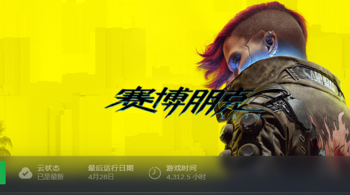

pr80.net 永夜安港
@pr80net
@aiika23uxu @ZakkysLab 值得，赛博朋克2077是游戏领域的绝命毒师

脳Future
@aiika23uxu
@pr80net @ZakkysLab 最近在打2077 印象最深刻的是李德线昭美说一切消失前最后的那个瞬间知道了自己并不孤独 好喜欢dlc往日之影这个标题 不光是小鸟的往日之影也是v的往日之影 我们真的要在过去中沉湎然后死去吗…自己也不止一次思考这样的问题 未来的太阳太过耀眼无法面对 可是我依旧想能够站在阳光下过完自己的人生啊